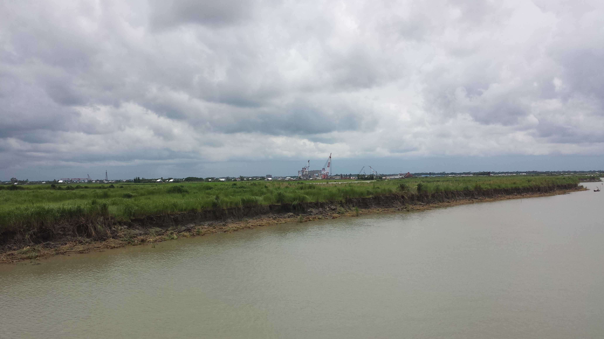

This site is being created for research purpose. data showed here are not 100% correct. Please visit our main website at https://padmamuseum.gov.bd

The Padma Bridge Museum, developed under the Padma Multipurpose Bridge Project, is a landmark institution committed to biodiversity preservation, research, and environmental education in Bangladesh. 🏞️ Located near the iconic Padma Bridge, the museum showcases the ecological transformation of the Padma River and its surrounding regions.
The museum hosts school visits, public seminars, and community awareness programs to inspire the next generation to protect and care for our environment.
Whether you're a 📚 student, 🔬 researcher, 🌏 tourist, or 🌿 nature enthusiast, the Padma Bridge Museum offers a fascinating journey through the ecological and infrastructural evolution of Bangladesh.